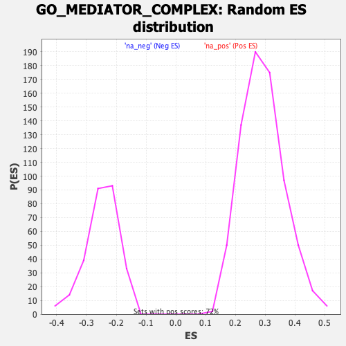

| | | Dataset | Recurrence |
| Phenotype | NoPhenotypeAvailable |
| Upregulated in class | na_neg |
| GeneSet | GO_MEDIATOR_COMPLEX |
| Enrichment Score (ES) | -0.45911962 |
| Normalized Enrichment Score (NES) | -1.8497611 |
| Nominal p-value | 0.0 |
| FDR q-value | 0.25782967 |
| FWER p-Value | 0.987 |
Table: GSEA Results Summary
 Fig 1: Enrichment plot: GO_MEDIATOR_COMPLEX
Fig 1: Enrichment plot: GO_MEDIATOR_COMPLEX
Profile of the Running ES Score & Positions of GeneSet Members on the Rank Ordered List
| SYMBOL | RANK IN GENE LIST | RANK METRIC SCORE | RUNNING ES | CORE ENRICHMENT | | 1 | MED29 | 778 | 1.746 | 0.0211 | No |
| 2 | MED13L | 1977 | 1.271 | 0.0041 | No |
| 3 | MED10 | 2740 | 1.100 | 0.0035 | No |
| 4 | PPARGC1B | 3419 | 0.973 | 0.0027 | No |
| 5 | MED30 | 6504 | 0.533 | -0.1369 | No |
| 6 | MED22 | 7103 | 0.457 | -0.1516 | No |
| 7 | MED9 | 7502 | 0.413 | -0.1576 | No |
| 8 | MED28 | 8719 | 0.279 | -0.2103 | No |
| 9 | THRAP3 | 9017 | 0.246 | -0.2169 | No |
| 10 | MED18 | 9072 | 0.239 | -0.2113 | No |
| 11 | CDK9 | 10125 | 0.125 | -0.2609 | No |
| 12 | MED15 | 11499 | -0.027 | -0.3304 | No |
| 13 | MED8 | 12166 | -0.108 | -0.3608 | No |
| 14 | MED6 | 12380 | -0.132 | -0.3671 | No |
| 15 | CCNC | 13003 | -0.213 | -0.3916 | No |
| 16 | MED12L | 13328 | -0.255 | -0.3993 | No |
| 17 | MED16 | 13344 | -0.259 | -0.3910 | No |
| 18 | MED17 | 14240 | -0.375 | -0.4238 | No |
| 19 | MED7 | 14530 | -0.413 | -0.4242 | No |
| 20 | MED1 | 15211 | -0.510 | -0.4413 | Yes |
| 21 | MED14 | 15386 | -0.537 | -0.4314 | Yes |
| 22 | MED19 | 15397 | -0.538 | -0.4131 | Yes |
| 23 | MED24 | 15506 | -0.554 | -0.3993 | Yes |
| 24 | UXT | 15512 | -0.555 | -0.3802 | Yes |
| 25 | CDK19 | 15920 | -0.622 | -0.3793 | Yes |
| 26 | MED11 | 15940 | -0.625 | -0.3584 | Yes |
| 27 | CDK6 | 16013 | -0.637 | -0.3398 | Yes |
| 28 | MED20 | 16708 | -0.757 | -0.3490 | Yes |
| 29 | MED23 | 17154 | -0.852 | -0.3420 | Yes |
| 30 | MED31 | 17298 | -0.888 | -0.3183 | Yes |
| 31 | MED12 | 18059 | -1.095 | -0.3190 | Yes |
| 32 | MED25 | 18372 | -1.202 | -0.2930 | Yes |
| 33 | BCLAF1 | 18401 | -1.218 | -0.2518 | Yes |
| 34 | CDK4 | 18465 | -1.247 | -0.2115 | Yes |
| 35 | CDK8 | 18627 | -1.318 | -0.1736 | Yes |
| 36 | MED27 | 18707 | -1.368 | -0.1299 | Yes |
| 37 | MED13 | 18735 | -1.381 | -0.0830 | Yes |
| 38 | MED21 | 19068 | -1.587 | -0.0445 | Yes |
| 39 | MED4 | 19330 | -1.940 | 0.0100 | Yes |
Table: GSEA details [plain text format]

Fig 2: GO_MEDIATOR_COMPLEX: Random ES distribution
Gene set null distribution of ES for GO_MEDIATOR_COMPLEX